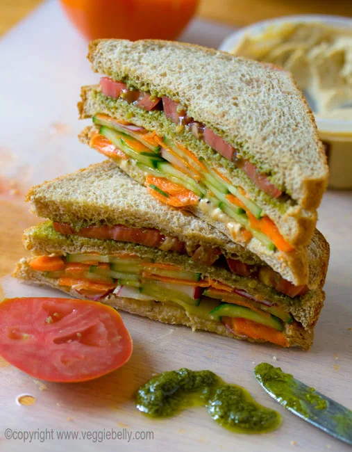

VEGETABLE SANDWICH

Description
A vegetable sandwich is a quick, fresh, and delicious snack made with soft bread, crunchy vegetables, and flavorful spreads. It is usually prepared with ingredients like cucumber, tomato, and onion, along with butter or mayonnaise.
This sandwich is easy to prepare and makes a light and satisfying breakfast or snack. It can be enjoyed as it is or lightly toasted for a crispy and delicious taste.
Ingredients Required :
- 4 slices of bread
- 1 tomato
- 1 cucumber
- 1 small onion
- 2 tablespoons of butter
- 2 tablespoons of mayonnaise
- salt and pepper to taste
Steps to make a vegetable sandwich:
- Slice the tomato, cucumber, and onion into thin pieces.
- Spread butter and mayonnaise on the bread slices.
- Place the vegetables on one slice of bread.
- Add salt and pepper according to taste.
- Cover with another bread slice and serve.
HOME